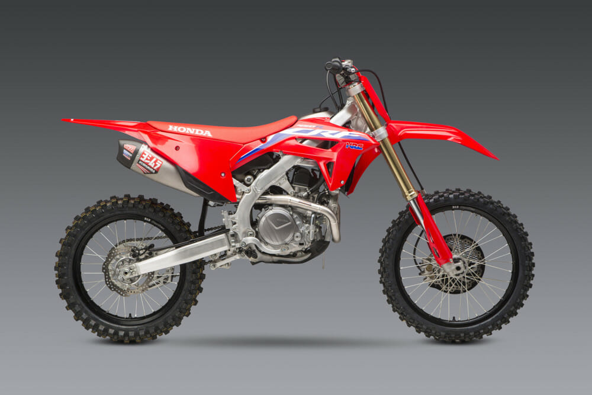

Engineered from DNA that comes from the whole CRF family, good times are guaranteed on this entry level bike, from the first kick. The smallest bike in the Honda kids range is packed with big possibilities for little adventurers. Easing 5-7 year old beginner riders into racing is the smooth-shifting three-speed transmission with automatic clutch, and an adjustable throttle limiter will ensure your little racer doesn’t get too adventurous.
